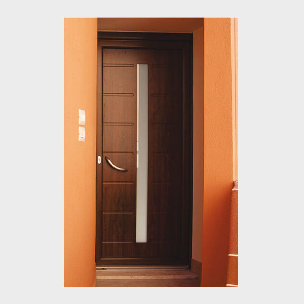
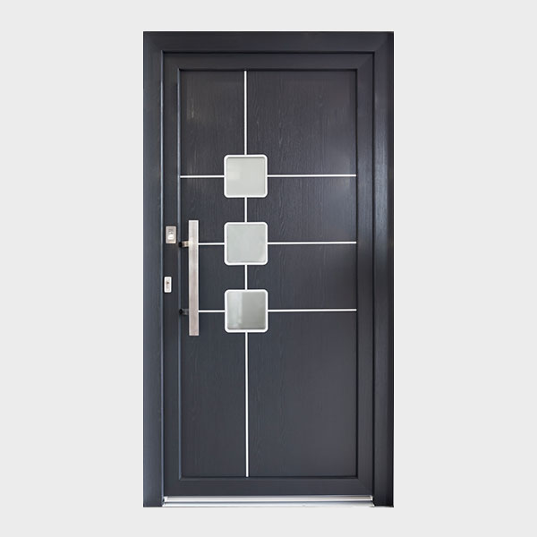

Portoni d'ingresso Simar
Portoni Futur
Sistema a doppia guarnizione di battuta e profili a 5 camere arrotondati esternamente.
Portoni Klimalux
Sistema a tripla guarnizione di battuta e profili a 7 camere squadrati esternamente.
Portoni Klimablind
Portone blindato in PVC certificato in classe di sicurezza RC3. Sistema a tripla guarnizione di battuta e profili a 7 camere.

Portoni Blindati
1: Controtelaio e Telaio Fisso
sono i due profili, realizzati in lamiera d'acciaio, che costituiscono la struttura che fissa la porta al muro.
2: Scocca
Realizzata in lamiera galvanizzata rinforzata, può anche essere coibentata, per conferirle caratteristiche di impermeabilità ai suoni ed alle temperature esterne.
3: Cerniere
in acciaio al carbonio ad altissima resistenza con perno a sfera in acciaio, consentono l'assetto della porta sia in senso orizzontale che verticale.
4: Rostri Fissi
consentono di formare un corpo unico tra anta mobile, telaio e contro-telaio.
5: Serrature
disponibili a Doppia Mappa, sia del tipo tradizionale che con Nucleo Intercambiabile, serrature predisposte per il Cilindro Europeo. Disponibile anche l'incontro elettrico per l'apertura della porta a distanza e serrature elettro motorizzate.
6: Limitatore di apertura
braccetto in acciaio che consente l'apertura parziale della porta e il suo blocco.
7: Deviatori
sia singoli che doppi sono realizzati in acciaio ad alta resistenza, per ancorarsi al meglio sia alla porta che al telaio.
8: Cornici Perimetrali
conferisce alle porte "Ferwall" una elevata resistenza e dona un'eleganza ineguagliabile. Su richiesta cornici in legno in tinta con i pannelli.
9: Pannelli
vasta gamma di rivestimenti composta da 16 collezioni, 170 modelli differenti di pannelli che associati alle varie tonalità di colore danno luogo ad un catalogo ampio per ogni dimensione di porta.
10: Manigliera
la porta è di serie corredata con la maniglieria standard in Alluminio Bronzato, ma può essere personalizzata scegliendo dal nostro catalogo una delle collezioni di manigliera e pomoli sia in Alluminio Argento, che Ottone Lucido, Ottone Cromo Lucido, e Ottone Cromo Satinato.
11: Spioncino
grandangolare a 200° o spioncino elettronico: il dispositivo integra una videocamera, un display a colori , un campanello e la funzione intercom.
Portone Blindo
Informazioni tecniche prodotto
Rappresenta la porta più versatile della gamma Ferwall.
Pur mantenendo un ottimo grado di economicità, riesce a soddisfare anche
le richieste più esigenti dal punto di vista estetico.
È disponibile nelle versioni BLINDO NORMAL, con serratura Doppia Mappa,
e BLINDO EUROPA, che adotta la più sicura e comoda serratura a Cilindro Europeo.
La sicurezza garantita dagli 8 punti di chiusura mobili,
dai 6 rostri fissi che si ancorano al telaio e dalle 2 cerniere ad altissima resistenza.
Tutti i modelli sono disponibili nella versione standard e possono essere forniti, su richiesta,
anche fuori misura, adattandoli a tutte le particolari esigenze.
Possiede la marcatura CE EN 14351-1, e risulta conforme alla "Classe 3"
delle norme Antieffrazione UNI ENV 1627-1628-1629-1630.
Portoni Blindo Ver.2
Informazioni tecniche prodotto
È la soluzione economica per chi cerca il prestigio e la praticità
di una porta a due ante, conservando tutte le caratteristiche costruttive
e le dotid'invulnerabilità della linea Blindo, a questo modello viene abbinata
una seconda anta, anch’essa blindata. Disponibile nelle versioni BLINDO 2 NORMAL,
con serratura Doppia Mappa, e BLINDO 2 EUROPA, che adotta la più sicura e comoda
serratura a Cilindro Europeo.
Su richiesta sono assemblabili tutti i tipi di serratura.
La sicurezza è garantita dagli 11 punti di chiusura mobili, dai 12 rostri fissi
che si ancorano al telaio e dalle 4 cerniere registrabili ad altissima resistenza.
È possibile richiedere che le cornici perimetrali che circondano la porta vengano
rivestite con cornici in legno in tinta con il pannello adottato, così da conferire
alla porta un tocco di eleganza. La porta modello Blindo 2, possiede la marcatura
CE EN 14351-1, e risulta conforme alla “Classe 2” delle norme Antieffrazione UNI ENV 1627-1628-1629-1630.
Portone Pocker
Informazioni tecniche prodotto
Impenetrabilità, robustezza, eleganza e raffinatezza sono le carte vincenti che rendono
la linea POCKER il fiore all’occhiello della produzione Ferwall. Tutte caratteristiche
racchiuse nell'accurata selezione dei materiali e nella cura nelle finiture eseguite
artigianalmente. La porta può essere prodotta su misura ed equipaggiata con molteplici
optional.
Robustezza garantita dai 14 punti di chiusura mobili,
dai 6 rostri a elevata resistenza che si vanno ad incastonare nel telaio, dalle 3
cerniere registrabili ad altissima resistenza adottate e dalla doppia serratura a
cilindro europeo che raddoppia la sicurezza delle già elevate caratteristiche di
questo tipo di chiusura.
La linea Pocker possiede la marcatura CE EN 14351-1, ed
è resistente alla "Classe 4" delle norme UNI ENV 1627-1628-1629-1630 che ne sanciscono
l'ingresso nell'elite delle porte di lusso ad un prezzo altamente competitivo.
Portone Style
Informazioni tecniche prodotto
Studiata in fase progettuale in ogni minimo dettaglio e prodotta
con materiali severamente selezionati, attraverso processi di lavorazione di elevata tecnologia.
La nuova linea style di FERWALL oltre a dire addio all'epoca delle cerniere a vista,
conta su un elevato livello di personalizzazione.
Grazie all'utilizzo delle cerniere a scomparsa, possono essere posizionate raso muro.
Create artigianalmente, abbinano il valore estetico a quello della sicurezza, l'eleganza alla protezione.
Certificata in classe antieffrazione e inoltre: tenuta all'acqua, permeabilità all'aria,
resistenza al vento, trasmittanza termica e fono assorbenza.
Portone Top
Informazioni tecniche prodotto
La linea TOP è l'ideale combinazione tra sicurezza e design.
Modello che si pregia di essere completamente coibentato con particolari materiali
che le conferiscono elevate doti d'impenetrabilità sia alle temperature che ai suoni esterni.
Il design è accentuato dalle maestose cornici in legno che circondano tutto il profilo della porta,
donandole maggiore eleganza. Disponibile nelle versioni TOP NORMAL,
con serratura Doppia Mappa, e TOP EUROPA.
La porta modello TOP è stata sottoposta alle prove di antieffrazione secondo
le norme UNI ENV 1627-1630 ed è risultata resistente fino alla "Classe 3".
Il modello rientra tra le proposte a marchio FERWALL adatta a soddisfare qualsiasi desiderio,
progetto e necessità abitativa che pensi anche a preservare il confort interno.
Ben adatto a proteggere
la tua casa non solo dalle intrusioni di estranei ma soprattutto da quella degli agenti atmosferici.
Portone Top Ver.2
Informazioni tecniche prodotto
La versione a 2 ante della linea Top è denominata TOP 2
e viene normalmente utilizzata negli ingressi di grandi dimensioni,
mantenendo inalterate tutte le caratteristiche di robustezza e design accreditate dalla versione Top.
L’accoppiamento delle due ante permette di realizzare portoni dall'aspetto altamente elegante,
che diviene monumentale quando le due ante hanno elevate dimensioni. In questa tipologia di porta
la robustezza è garantita da un vigoroso profilo centrale in lamiera d'acciaio
e dai pistoni in acciaio zincato.
Entrambe le ante sono completamente
isolate, grazie all'ausilio di particolari materiali, dai rumori e dalle temperature esterne.
Disponibile nelle versione
TOP 2 NORMAL con serratura Doppia Mappa, e TOP 2 EUROPA,
che adotta la serratura a Cilindro Europeo.
Possiede la marcatura CE EN 14351-1, è stata so
ttoposta alle prove di antieffrazione, risultata resistente
fino alla "Classe 3".
Portone Top Fire
Informazioni tecniche prodotto
La linea TOP FIRE è l'ideale combinazione tra tecnologia, sicurezza e design. Si pregia di essere completamente coibentato con particolari materiali che le conferiscono elevate doti di resistenza al fuoco. Disponibile nelle versioni TOP FIRE NORMAL, con serratura Doppia Mappa, e TOP FIRE EUROPA, che adotta la più sicura e comoda serratura a Cilindro Europeo. La porta modello Top Fire è risultata resistente fino alla "Classe 3", inoltre possiede la marcatura CE EN 14351-1.
TUTTI I RIVESTIMENTI
Materia
La nuova collezione di pannelli per interni ed esterni è in parte realizzata con rivestimenti esclusivi in pietra naturale. Le diverse texture di ogni singola lastra rendono l’ingresso di casa unico ed inimitabile. I materiali utilizzati, sono riconducibili a materiali naturali secolari, quali: Ardesia, Arenaria e Quarzite.